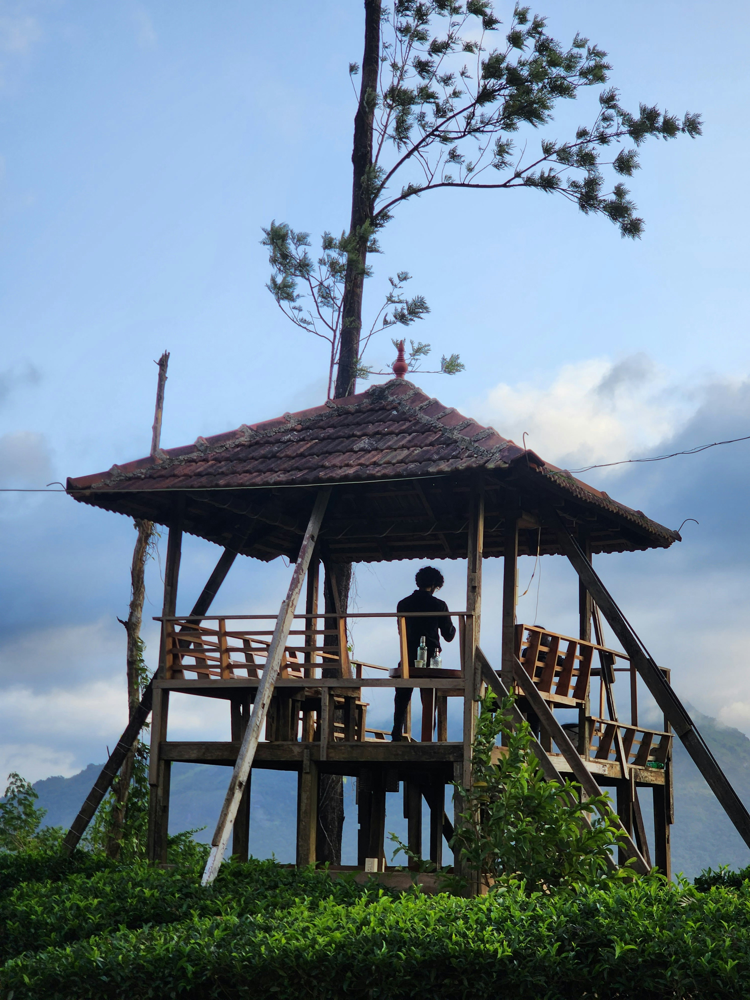
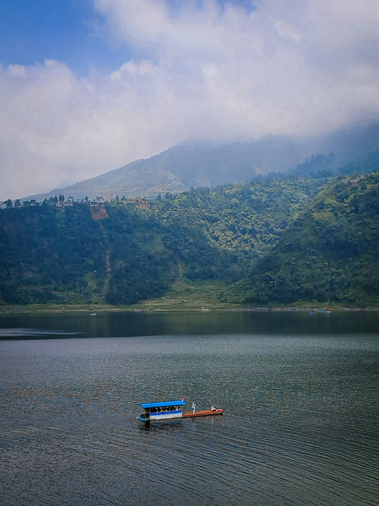

ROUTE
ROUTE← Back to destinationsCHENNAI → WAYANAD
KERALA • 4 DAYS
Wayanad
Green Western Ghats, lakes, caves and waterfalls. Plan a private Tempo Traveller journey from Chennai with your preferred vehicle, dates, food stops, room category and sightseeing pace.
CHENNAI → WAYANADDESTINATION PREVIEW
Open the route around your group.
Use the destination page as the starting point, then request a vehicle, preferred date and customised route.
ROUTE
STAY
EXPERIENCEWHY GO
Green Western Ghats, lakes, caves and waterfalls.
Ideal for private family trips, friends groups, corporate outings and multi-day road journeys from Chennai.
✓ Pookode Lake✓ Lakkidi✓ Edakkal Caves✓ Waterfalls
TRIP PLANNER
Build your Wayanad route.
- Choose 12–25 seater based on group size.
- Add hotel category, meal stops and sightseeing preferences.
- Include extra nights or nearby destinations.
- Final timing and attraction access are confirmed before departure.
REQUEST A CALLBACK
Planning Wayanad?
Send your name, phone number and preferred date. The request opens a ready-to-send WhatsApp message for the RG booking team.
✓ Customer number included✓ Destination included✓ Preferred date included